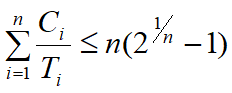

中断
中断与中断系统
中断的概念
[!note]
在程序运行过程中出现某紧急事件，必须中止当前正在运行的程序，转去处理这个事件，然后再恢复原来运行的程序，这一过程称为中断.
- 中断系统：中断装置（硬件），中断处理程序（软件）
中断装置
发现并响应中断的硬件机构
识别中断源，当有多个中断源时，按紧迫程度排队；
保存现场；
引出中断处理程序。
中断响应和处理的过程

中断源：引起中断的事件。
中断控制器：CPU中的一个控制部件，包括中断控制逻辑线路和中断寄存器
中断寄存器：保存与中断事件相关信息的寄存器。
中断字：中断寄存器的内容。
[!tip]
中断类型
- 强迫性中断
- 自愿性中断
中断向量
中断处理程序的运行环境与入口地址（PSW，PC）
- 每类中断事件有一个中断向量,
- 中断向量的存放位置是由硬件规定的,
- 中断向量的内容是OS在系统初始化时设置好的。
中断向量mode应为系统态
中断嵌套与系统栈
中断嵌套
[!note]
系统在处理一个中断事件的过程中又响应了新的中断，称系统发生了中断嵌套
- 一般原则：只允许响应更紧迫的中断事件，中断嵌套的层数大多不会超过一个值（中断优先级别个数）
- 实现方法：中断响应后立即屏蔽不高于当前中断优先级的中断源。
系统栈
[!note]
系统栈：系统区，位置由硬件确定，保存中断现场信息
对于嵌套中断，现场恢复的次序和保存次序相反，所以保存现场信息的数据结构是栈，由操作系统访问
- 系统栈保存的现场信息有中断装置保存的被中断程序的PSW和PC，还保存由中断处理程序保存的如通用寄存器的值等其它现场信息。
- 系统栈还传递操作系统子程序之间相互调用的参数，返回值和返回地址。
- 中断相当于是特殊的子程序调用，只不过它的发生时刻具有不确定性。
- 由于进一步保存现场信息是通过运行中断处理程序完成，程序运行时可以进行中断嵌套，为保证正确操作系统不允许在保存现场信息时响应中断
- 恢复现场信息也是由中断处理程序来完成，此时的工作也不允许响应中断
- 关中断：尽管产生了中断源且发出了中断请求，但CPU内部的PSW中的中断允许位被清除，此时不允许CPU响应任何中断，此现象为关中断。
中断优先级与中断屏蔽
中断优先级
中断优先级：根据引起中断的事件的重要性和紧迫程度，硬件将中断源分成若干个级别
硬件规定的中断响应次序，依据紧迫程度；处理时间。
只允许高优先级别中断可以嵌入低优先级中断
中断屏蔽
暂时禁止一个或多个中断源向处理机发出中断请求，屏蔽所有中断源就是关中断
硬件系统提供中断屏蔽指令，通过它可以暂时禁止中断源向处理机发送中断请求，同时还有解除屏蔽指令
高优先级中断事件处理不受低优先级中断打扰；
程序调整中断响应次序。
中断处理逻辑
中断分析
关于等待和剥夺
- 何时等待？处于核心态，无嵌套中断或有嵌套
- 等待剥夺几次？可能多次
- 保存在PCB的是什么级别现场？核心级别
- 等待或者剥夺时系统栈如何？栈底是目态现场，然后是嵌套函数的返回点，参数，局部变量，返回值；如有嵌套，接下来是核心现场，然后是嵌套函数的返回点、参数、局部变量、返回值；（可能有多重）

中断处理程序
I/O中断处理
正常结束：准备好数据后启动通道继续传输；唤醒相关等待进程。
传输错误：复执（eg. 3次)；报告系统操作员。
时钟中断程序
Housekeeping
- 进程管理：重新计算进程调度参数(eg. 动态优先数)
- 作业管理：记录作业在输入井中等待的时间，以及当前的优先级别，以便作业调度
- 资源管理：动态统计运行进程占有和使用处理器等资源的时间
- 事件处理：在实时系统中定时向被控对象发送控制信号
系统维护：定时运行死锁检测程序和记账程序
实现软时钟：运用硬件间隔时钟和一个存储单元
- 硬时钟5ms发生一次中断，实现软时钟50ms，存储单元初值10，发生一次中断寄存器减1，直到寄存器为0
控制台中断程序
- 多个控制按钮对应多个中断向量
- 按下控制按钮产生中断信号，指向中断处理程序
硬件故障处理
- 电源故障处理
- 掉电：硬件设备应保持继续工作一段时间
- 内存，寄存器Þ外存，停止设备，停止处理机
- 恢复：故障排除后恢复系统现场
- 启动处理机，启动设备，外存Þ内存，寄存器
- 掉电：硬件设备应保持继续工作一段时间
- 内存故障处理
- 内存单元出现错误，中断处理对其进行检测并确认错误后划为不可用区域
程序性中断的处理
- 只能由操作系统处理的中断
- 影响系统或其它进程：越界，非法指令，（处理：终止进程、调试）
- 需要系统管理或协助：页故障，缺段，（处理：动态调入）
- 可以由用户自己处理的中断
- 不影响系统和其它进程：除0，溢出，（处理：用户处理，或OS处理）

用户程序自行处理中断
- 编译时：为每个用户程序生成一个中断续元表（用户态）
- 运行时：执行调试语句，填写中断续元表
- 中断时：根据中断原因查中断续元表
- 为0，用户未规定中断续元，由OS标准处理
- 非0，用户已规定中断续元，由用户处理
[!TIP]
步骤：
- （1）目态程序在运行时发生溢出中断
- （2）中断装置将PSW和PC值压入系统栈
- （3）取中断向量并送入PSW和PC寄存器
- （4）执行对应的操作系统中断处理程序
- （5）访问用户程序中的中断续元表（假定非0）
- （6）系统栈中现场转移到用户栈
- （7）中断续元运行环境和入口送PSW和PC
- （8）控制权转到中断续元，执行中断续元
- （9）由用户栈弹出现场送PSW和PC
- （10）返回断点继续执行
自愿性中断的处理
访管指令（SuperVisor Call)形式：
准备参数
SVC n
取返回值
系统调用（system call)形式：返回值=系统调用名称（实参1,…,实参n)
编译程序会将系统调用形式翻译为访管指令形式
处理器调度
[!note]
3.2.1 处理器调度算法：按什么原则分配
3.2.2 处理器调度时机：何时重新分配
3.2.3 处理器调度过程：如何完成分配
处理器调度算法
因素
考虑因素：CPU利用率 ; (max)，吞吐量 ; (max)，周转时间 ; (min)，响应时间 ; (min)，系统开销 ; (min)
调度参数
CPU burst vs. I/O burst
阵发期
CPU burst cycle: 进程(线程)一次连续使用CPU做计算
I/O burst cycle: 进程(线程)一次使用设备做I/O操作
进程运行行为
CPU调度：考虑处于CPU burst进程集合
下一个CPU burst的长度估算:
令τn是估计的第n个CPU阵发期的长度， tn的值是进程最近一次CPU阵发期长度，则有如下估算公式: τn+1=αt*n + (1-α)τn
参数α(0≤α≤1)控制tn和τn在公式中起的作用：当α=0时，τn+1=τn；当α=1时，τn+1=t*n。通常α取0.5
剥夺式调度与非剥夺式调度
剥夺式(preemptive)
就绪进程可以从运行进程手中抢占CPU
获得处理机的进程有3种:进程运行,直到结束; 等待 ;被抢先
非剥夺式(non-preemptive)
就绪进程不可从运行进程手中抢占CPU
获得处理机的进程有2种：进程运行,直到结束；等待
先到先服务算法
FCFS（First Come First Serve)：按进程申请CPU（就绪）的次序
- 优点：“公平“
- 缺点：短作业等待时间长
短作业优先
SJF(Shortest Job First)：按CPU burst长度先执行时间短的作业，默认为不可抢占
§Process Arrival time Burst time
§ P1 0 12
§ P2 0 5
§ P3 0 7
§ P4 0 3
Gantt Chart：

特点：
- 假定所有任务同时到达，平均等待时间最短，也可以退出平均周转时间最小
忽略了作业等待时间，长作业可能被饿死
例题：
§现有三个同时到达的作业J1，J2和J3，它们的执行时间分别为T1、T2和T3，且
T1<T2<T3，系统按照单道方式运行且采用短作业优先算法，则平均周转时间为(3T1+2T2+T3)/3
最短剩余时间优先算法(SRTN)
可剥夺SJF，选择剩余时间最短的进程或线程
§Process Arrival time Burst time
§ P1 0 12
§ P2 1 9
§ P3 3 6
§ P4 5 3
Gantt图:

- 例题：

最高响应比优先(HRN)
§Highest Response Ratio Next
RR=(BT+WT)/BT=1+WT/BTBT=burst time
WT=wait time
计算每个作业的响应比，选择响应比最高的作业优先投入运行，类似于动态的优先级调度
优点
- 同时到达任务, 短者优先
长作业随等待时间增加响应比增加
例题：§一个作业8:00到达系统，估计运行时间为1小时。若从10:00开始执行，则其响应比为_。
RR=(BT+WT)/BT=1+WT/BT=1+2/1=3
最高优先数算法(HPF)
用于实时系统
静态优先数(static)
在进程创建时分配，生存期内不变
简单，开销小
公平性差，可能会造成低优先数进程长期等待
适合批处理进程
动态优先数(dynamic)
进程创建时继承优先数，生存期内可以修改
- 获得资源优先数提高
- 就绪时随等待处理机时间增长而提高
资源利用率高，公平性好
开销大，实现复杂
最高优先数算法有非剥夺式和剥夺式数
- 非剥夺式：获得处理机的进程运行，直至终止或者等待
- 剥夺式数：获得处理机的进程运行，直至终止或者等待，出现高优先级的进程（新创建或被唤醒的进程）
例子：
§可抢占CPU
§Process Arrival time Priority Burst time
§P1 0 0 8
§P2 2 1 5
§P3 4 3 7
§P4 0 2 3
§P5 5 7 2
Gantt Chart:

例题：

循环轮转算法（RR）
系统为每个进程规定一个时间片，所有进程按照其时间片长短轮流的运行
适用于分时系统，利于多用户交互
基本的轮转
时间片(quantum,time slice)长度固定，不变
所有进程等速向前推进
改进轮转：时间片长度不定，可变
对于时间片长度：
几十毫秒~几百毫秒(eg. 50ms)
过长：响应速度慢
过短：系统开销(overhead)大
例子
§RR可抢占CPU调度：time slice=4ms
§Process Arriveral time Burst time
§P1 0 17
§P2 0 10
§P3 0 3
§ Gantt Chart:
例题

多级队列算法(MLQ)
多级队列
多个就绪队列，进程所属的队列固定
每个队列可以采用不同的调度算法
例如在通用系统中：
队列1：实时进程就绪队列(HPF)
队列2：分时进程就绪队列 (RR)
队列3：批处理进程就绪队列 (HPF)
当CPU空闲时
优先选择队列1中进程。如果队列1为空，则选择队列2中进程，否则选择队列3中进程
反馈排队算法
在多级队列的基础上，多个就绪队列，进程所属队列可变，并且越往上的队列优先级越高，但时间片越小

处理机度时机
- 运行进程结束
- 运行进程等待
- 处理器被剥夺
中断与处理器切换的关系
中断是处理器切换的必要条件，但不是充分条件
- 必然引起进程切换的中断：进程自愿结束，exit()，进程等待，进程强行终止
- 可能引起进程切换的中断：时钟，系统调用
处理机调度过程
进程切换：
中断处理后，需要进程切换则转入处理器分派程序dispatcher，选择上升进程运行
[!tip]
dispatcher
- 保存下降进程的现场：寄存器->PCB
- 选择上升进程：
- 按调度算法在就绪队列选择进程
- 为防止就绪队列为空，系统通常安排一个调度级别最低的进程，当系统中无其它进程时，运行“闲逛”进程
- 恢复上升进程的现场：PCB-> 寄存器（先恢复通用寄存器和地址寄存器，PSW和PC然后用一条指令恢复
调度级别与多级调度
交换与中级调度
调度层次
- 高级调度
- 中级调度
- 低级调度：处理器调度
术语
[!note]
交换(swapping)：进程在内存和外存储器之间的调度
中级调度(mid-level scheduling)：是系统控制并发程度的一个级别
并发度(degree of multi-programming)：同时向前推进的进程个数
- 交换的目标：减少并发度，缓解内存空间
UNIX的中级调度
两个情况：
移入SRUN状态进程
如内存不够
移出SWAIT和SSTOP状态进程；
如还不够，移出SSLEEP和SRUN状态进程
条件
待移入进程在外存时间>=3秒
待移出进程在内存时间>=2秒
作业与高级调度
作业调度
作业调度：将一个作业由（磁盘的）输入井调入内存，并为其建立相应的进程PCB，使其具有运行的资格
批处理作业的处理结果：程序的执行结果；计帐信息
作业的状态
提交: 输入机向输入井传送
后备: 在输入井,尚未进入内存
执行: 分解为进程,在内存处理
完成: 处理完毕,结果在输出井
退出: 由输出井向打印机传送
状态转换：
作业控制块与作业表
JCB
JCB（Job Control Block）：作业标识，所属用户，作业状态，调度参数，输入井地址，输出井地址，资源需求，进入时间，处理时间，完成时间
- SPOOling输入建立，作业调度使用，SPOOling输出撤销
批处理作业调度程序
批处理作业调度程序(1)
- 在后备作业集合中选择作业，并为其建立作业控制进程来处理该作业。
- 其中为作业建立控制进程：

批处理作业调度程序(2)
实时调度
[!note]
实时任务：具有明确时间约束的计算任务，即明确开始结束
实时调度：合理安排就绪实时任务的执行次序，满足每个实时任务时间约束条件的调度
实时任务的分类
硬实时和软实时（对应于实时操作系统）
硬：必须满足任务截止期要求
软：期望满足截止期
周期性和随机性
周期：固定时间发生
随机：发生时刻不确定
周期性实时事务
- 可调度的必要条件：处理时间小于等于发生周期
- 多个进程时，所有进程处理时间和发生周期的比值和小于等于1
非周期实时任务
[!tip]
若实时任务到达服从参数为λ的泊松分布时，当1/λ值很小，小于等于一个阈值，则可以将其视为周期性实时任务调度，任务的平均到达时间间隔为1/λ——平均周期
最早截止期调度
EDF:
优先选择完成截止期最早的实时任务
对于新到达的任务，如果其完成截止期先于正在运行任务的完成截止期，则重新分派处理器，即剥夺
可调度条件：
 ，C处理时间，T发生周期
，C处理时间，T发生周期
速率单调调度
RMS：
面向周期性实时事务，非剥夺式
优先调度发生周期最短（频度最高）的实时任务
可调度条件：
例题：
最小裕度优先调度
类似最早截止期优先，优先级基于一个进程的裕度
L=D-(T+C)L为裕度，T为当前时间，D为任务的截止期，C为剩余处理时间
最小裕度优先可调度的充分条件与最早截止期优先相同
多处理器调度
自调度
- 均衡调度
- 一个就绪队列，多处理机访问互斥
- 系统负载利用率高，但是程序亲和性小
组调度
将一组相关(合作)的线程同时分派到多个处理机上运行
避免合作线程之间的相互等待
降低开销,提高运行效率